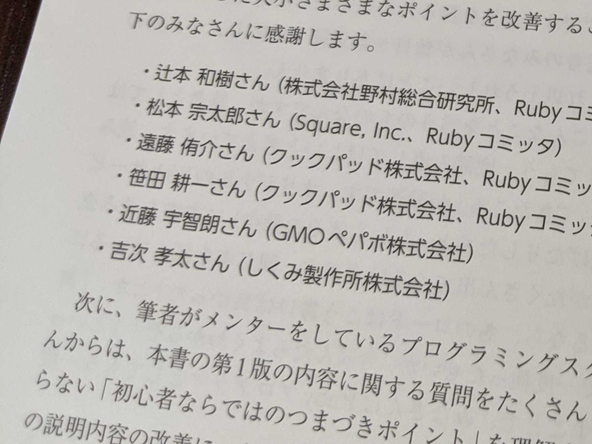

「プロを目指す人のためのRuby入門 改訂2版」のレビューをした
プロを目指す人のためのRuby入門 改訂2版 / 伊藤 淳一のレビューに参加したので、それについて書く。
本の紹介
「プロを目指す人のためのRuby入門」はソニックガーデンRailsプログラマ、フィヨルドブートキャンプメンターなどで活躍されている伊藤淳一さんが執筆し、2017年に初版が発売された書籍である。今回、Ruby3.0対応など最新の情報を盛り込んだ改訂版が2021年12月2日に発売される予定だ。表紙から通称「チェリー本」と呼ばれている。改訂版が出版されるほど読まれており、フィヨルドブートキャンプや弊社でもよく言及されているのを見るため、実感としてもよく読まれている印象だ。
きっかけ
前回の記事 で紹介した通り、フィヨルドブートキャンプにメンターとして関わりはじめた。同じくメンターをされている伊藤さんより、フィヨルドブートキャンプ上で「改訂版を執筆中だが、レビュワーを募集したい」とのアナウンスがあり、そちらに手を挙げたのがきっかけでレビューに参加することになった。
やったこと
全13章あるうち、1章、2章、10章、12章のレビューを担当した。
レビューする際はできるだけRubyにあまり慣れていない人の目線で読むように心掛けた。また、「ここのサンプルコードではこうなっているが、普段自分ならこう書いている」、という書き方についての意見もあげた。もちろんあげた意見全てが反映されたわけではないが、少しでもわかりやすい記述に貢献できていることを願う。
ところで、レビューの意見などを提出する方法としてはGitHub Issuesが用いられていた。自分が作成したIssue上で、伊藤さんとやりとりするような形になっていたが、普段からGitHub Issuesを使って開発に必要な要件や問題点の整理などをやっている身としては使い慣れたツールであり、やりやすく感じた。
内容について
自分もレビューを担当した1章、2章を中心として、初心者向けの導入から入り、タイトルの通り「プロを目指す人」に向けて詳細な内容まで書かれているなと思う。見本が届いて思ったこととしては、思ったより分厚いな、ということだ。初版では472ページだったものが第2版では568ページと100ページ近く増量されている。最近入ったパターンマッチ機能に1章割かれていたり、12章では最近開発が活発な debug.gem に触れられていたり、基礎から最新機能まで、手を動かして学べるサンプルコードつきで網羅するとそうなってしまったのだろう。「プロを目指す」ための内容はかなり充実していると思う。
最後に

見本を献本いただき、レビュワーとして名前も載せてきただき、感謝申し上げたい。568ページの大作の改訂、伊藤さんはかなり大変だったのではないだろうか。そのような大作の一部に関わらせていただいたこと、うれしく思う。
上記写真の通り、Rubyコミッターの方々からのレビューもあり、内容の正確さや充実度としてかなりオススメできるので、興味がある方は是非購入いただきたい。こちらによると電子書籍版も出る予定のようだ。